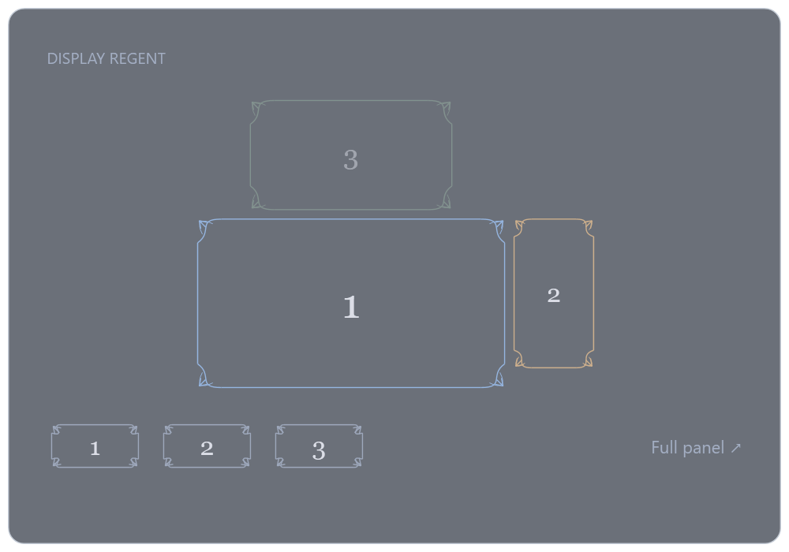

✦ Made for Windows by Knight AI+AV
A little reign
over every screen.
A glass panel that fades in above your system tray. Click a framed screen to switch it on or off. Names appear only on hover. Move off the widget and it gently fades away. Three preset boxes, and a full panel when you need it.
Free to use. Open source. Entirely on your PC.

A seat in your tray
Click the tray icon or press Ctrl + Alt + M. Click a monitor frame to switch it. Preset boxes 1–3 recall scenes. Full panel opens setup and troubleshooting.
The shape of your setup
Stacked, side by side or mirrored. Resolution sets the frame sizes. Windows supplies the positions.
A way back, built in
Every switch gets a 20-second check. Unconfirmed changes trigger an attempt to restore the previous layout.
Less fiddling.
More flow.
A tiny bit of ceremony for a task you do every day. Fine linework, clear controls, and no maze of settings.
Click a frame to turn it on or off in this illustration.
This browser illustration does not change your displays. The Windows app does.
Yours to arrange.
Useful controls, without the control room.
- Pick the screens that are live
- Choose individual connected displays, including outputs that Windows currently has disabled.
- Make one your primary
- Put the center of your desktop where it belongs. The app translates the layout around your chosen primary.
- Move, extend or mirror
- Drag frames with edge snapping. Stack them in a click. Mirror another display when you want the same desktop.
- Save scenes and shortcuts
- Keep your work, gaming and single-screen arrangements. Click a scene or bind Ctrl + Alt + 1–9.
- Change resolution
- Pick from modes Windows reports for the active display. Driver validation checks the result before switching.
- Keep your setup private
- No account, telemetry or network requests. Preferences live in your Windows user folder.
✦ The first public preview
Bring order
to your desktop.
Windows 10 and 11. Install for your user, or take the portable version. The Windows runtime is included.
A few things to know.
Is it really free?
Yes. Display Regent is published under the MIT license. You can use, inspect, change and share the source. There are no paid features, subscriptions or hosted services.
Does it work offline?
Yes. The desktop app makes no network requests. Its runtime is bundled, so you do not need to install .NET separately. The download website and GitHub are needed only to obtain a release.
What happens if a switch goes wrong?
The app asks you to keep a new layout within 20 seconds. If you do not, it restores the previous configuration. A separate recovery process attempts restoration after 25 seconds, or sooner if the main app exits. Hardware disconnection, driver failure or a system reboot can still prevent restoration.
Are brightness, HDR and refresh-rate controls included?
No. This preview controls the active outputs, layout, primary display, mirroring and resolution. It retains existing target timings where possible. Monitor power, input switching, brightness, HDR and refresh-rate editing are outside this release.
How do I uninstall it?
Quit from the tray menu, then remove Display Regent in Windows Installed apps. Your saved scenes and preferences remain in your local app-data folder. The portable version can be removed by deleting its extracted folder after quitting.